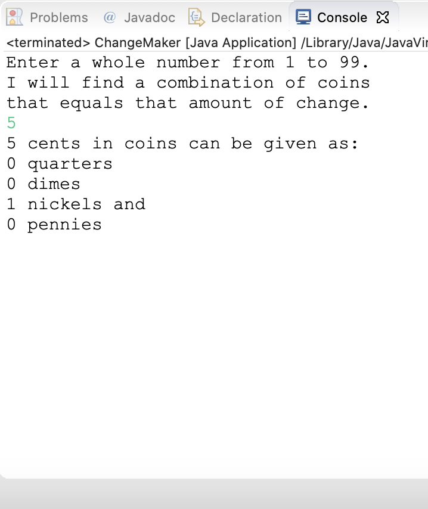
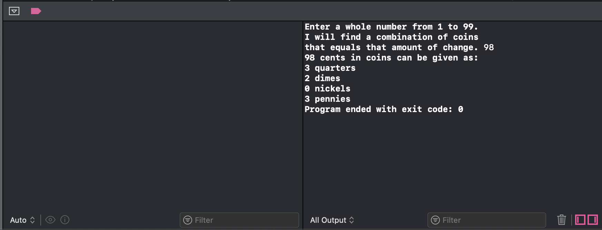

Java
import java.util.Scanner;
public class ChangeMaker
{
public static void main (String [] args)
{
int amount, originalAmount,
quarters, dimes, nickels, pennies;
System.out.println ("Enter a whole number from 1 to 99.");
System.out.println ("I will find a combination of coins");
System.out.println ("that equals that amount of change.");
Scanner keyboard = new Scanner (System.in);
amount = keyboard.nextInt ();
originalAmount = amount;
quarters = amount / 25;
amount = amount % 25;
dimes = amount / 10;
amount = amount % 10;
nickels = amount / 5;
amount = amount % 5;
pennies = amount;
System.out.println (originalAmount +
" cents in coins can be given as:");
System.out.println (quarters + " quarters");
System.out.println (dimes + " dimes");
System.out.println (nickels + " nickels and");
System.out.println (pennies + " pennies");
}
}
Output

Swift
import Foundation
var amount, originalAmount, calcAmount, quarters, dimes, nickels, pennies: Int
print ("Enter a whole number from 1 to 99.")
print ("I will find a combination of coins")
print ("that equals that amount of change. ", terminator: "")
// read user input
if let amount = readLine() {
if let originalAmount = Int(amount){
if (originalAmount >= 1){
if (originalAmount <= 99){
calcAmount = originalAmount
quarters = calcAmount/25
calcAmount = calcAmount%25
dimes = calcAmount / 10;
calcAmount = calcAmount % 10;
nickels = calcAmount / 5;
calcAmount = calcAmount % 5;
pennies = calcAmount;
print ("\(originalAmount) cents in coins can be given as:")
print ("\(quarters) quarters")
print ("\(dimes) dimes")
print ("\(nickels) nickels")
print ("\(pennies) pennies")
}else{
print ("NUMBER OUT OF BOUNDS");
}
}else{
print ("NUMBER OUT OF BOUNDS");
}
}else{
print ("NUMBER OUT OF BOUNDS");
}
}
Output
